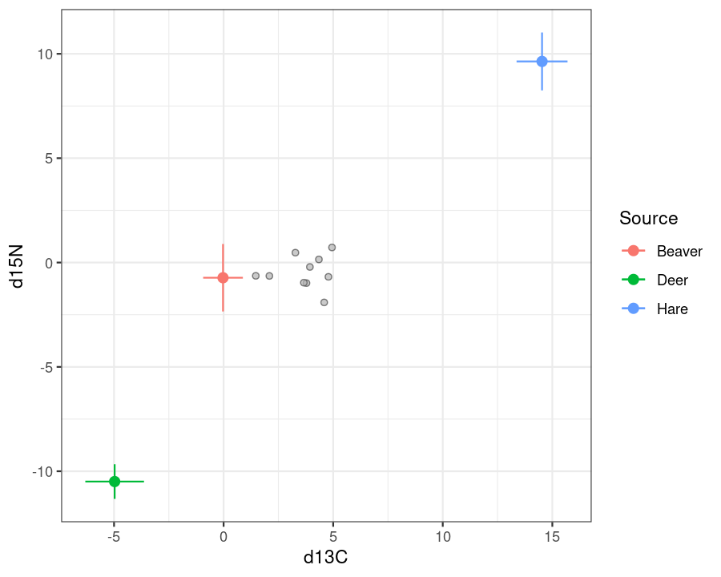
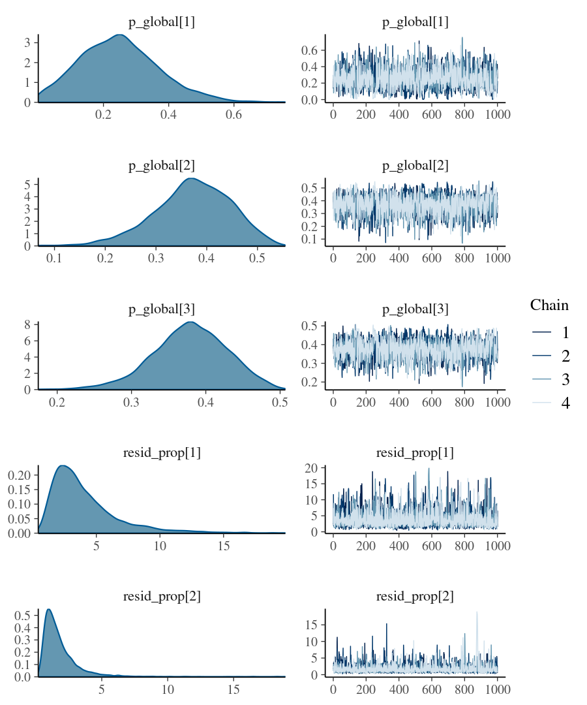
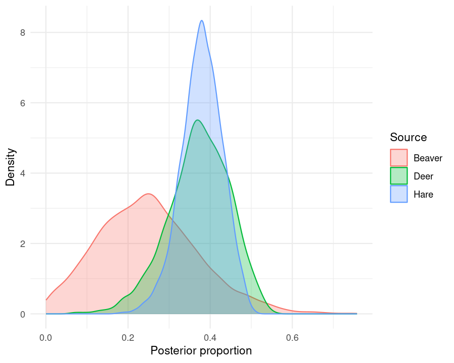

Overview
bsimms is an R package for fitting Bayesian stable isotope mixing models (SIMMs) via Stan, estimating the proportional contribution of two or more sources to a mixture from tracer data such as stable isotopes. It brings together mixing-model advances developed across the literature and implemented in the JAGS-based package MixSIAR — hierarchical source fitting, fractionation error, concentration dependence, cross-tracer covariance, flexible error structures — and extends them by letting source proportions depend on an arbitrary lme4-style fixed- and random-effects formula of mixture-level covariates.
Installation
You can install the development version of bsimms from GitHub like so:
# install.packages("pak")
pak::pak("mattiaghilardi/bsimms")Fitting models also requires a working Stan backend, either cmdstanr (recommended) or rstan, neither of which is installed automatically:
# cmdstanr (not on CRAN)
install.packages("cmdstanr", repos = c("https://stan-dev.r-universe.dev", getOption("repos")))
cmdstanr::check_cmdstan_toolchain()
cmdstanr::install_cmdstan()
# or rstan (on CRAN)
Sys.setenv(DOWNLOAD_STATIC_LIBV8 = 1) # only necessary for Linux without the nodejs library / headers
install.packages("rstan", repos = "https://cloud.r-project.org/", dependencies = TRUE)See the CmdStanR installation guide or the RStan Getting Started guide for OS-specific instructions and troubleshooting.
How to use bsimms
As an example, we fit a mixing model to simulated data for a 3-source, 2-isotope model with 10 mixture samples, no covariates (~1), raw replicate source data, and summarised (mean/SD) TDF data.
library(bsimms)
sim <- simulate_bsimms_data(
~1,
n_mixture_obs = 10,
source_names = c("Beaver", "Deer", "Hare"),
isotope_names = c("d13C", "d15N"),
seed = 1
)Before fitting, plot_isospace() plots the mixtures in isotope space against the TDF-corrected source means \pm 1 SD, to check that they fall within the region spanned by the sources.
plot_isospace(
sim$mixture_data,
sim$source_data,
sim$tdf_data,
isotope_names = sim$isotope_names,
source_means_sds = sim$source_means_sds,
tdf_means_sds = sim$tdf_means_sds
)
fit <- bsimm(
sim$formula,
mixture_data = sim$mixture_data,
source_data = sim$source_data,
tdf_data = sim$tdf_data,
isotope_names = sim$isotope_names,
source_means_sds = sim$source_means_sds,
tdf_means_sds = sim$tdf_means_sds,
conc_dep = sim$conc_dep,
error_structure = sim$error_structure,
source_col = sim$source_col,
cores = 4,
seed = 1
)Printing the fit gives a quick overview of the model.
fit
#> Bayesian stable isotope mixing model (bsimms)
#> formula: ~1
#> sources (K): 3 (Beaver, Deer, Hare)
#> isotopes (J): 2 (d13C, d15N)
#> mixtures (N): 10
#> error structure: process_residual
#> source data: raw
#> tdf data: summary
#> backend: cmdstanrsummary() reports the population-average source proportions and error term(s), each with a posterior mean, SD, 95% credible interval, and MCMC convergence diagnostics (rhat, bulk/tail effective sample size). With the default error_structure = "process_residual", the error term shown per isotope is resid_prop, MixSIAR’s multiplicative factor scaling the source/TDF variance propagated into the mixture – not a raw residual SD.
summary(fit)
#> Bayesian stable isotope mixing model
#> formula: ~1
#>
#> Population-average source proportions:
#> source mean sd q2.5 q97.5 rhat ess_bulk ess_tail
#> Beaver 0.249 0.122 0.033 0.511 1.003 1100 725
#> Deer 0.372 0.075 0.209 0.504 1.002 1100 931
#> Hare 0.379 0.050 0.272 0.472 1.002 1306 984
#>
#> Error term(s):
#> isotope mean sd q2.5 q97.5 rhat ess_bulk ess_tail
#> d13C 4.094 2.706 1.090 11.724 1.000 3042 1821
#> d15N 1.823 1.443 0.482 5.455 1.002 2384 1812rhat close to 1 and large effective sample sizes indicate the chains mixed well, which we can also check visually with trace and density plots of the underlying Stan parameters.
plot(fit)
Population-average contributions lean towards Deer and Hare over Beaver, though with fairly wide credible intervals given the small simulated sample size.
Since this model has no covariates, every mixture sample shares the same population-average proportions, so we can visualise their posterior distribution directly.
p_arr <- posterior_proportions(fit)
plot_proportions(p_arr[, 1, , drop = FALSE], type = "density")